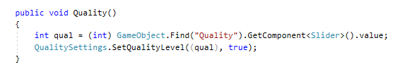
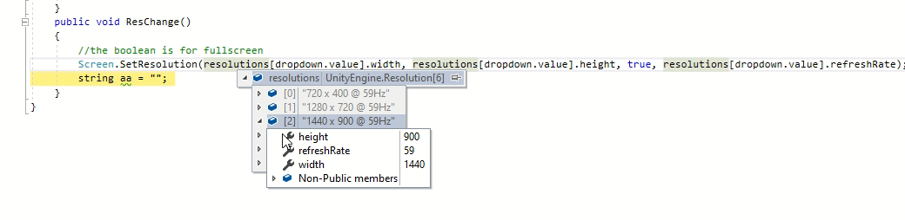

Technical Achievements
Getting Started
As I started this project, I instantly realised I was out of my depth. The first task that I was assigned, was to make a button inside the in-game pause menu redirect back to the main menu. I thought this would be easy since I have used C# before in the degree, but Unity was completely new to me and was very confusing. It was super confusing because there was lots of code that I did not understand and so many different parts of Unity that I needed to learn. An experienced team member (project 2 student) told me to make a test game to gain a basic understanding of Unity and implement the working button inside the pause menu in there. I followed the first six tutorials from this getting to learn unity basics tutorial before trying to add the pause menu from this tutorial to the gameThe exit button in this menu would redirect to a different scene, just like what I wanted to implement inside of SKIN. I did this by using the SceneManager’s Load Scene feature.
In this beginners tutorial I learned some basics of 3D Unity like object movement, camera following, collision between objects and basic navigation throughout Unity. Most of these basics where untransferable to SKIN since we already have player movement and collision but doing this tutorial game gave me a greater understanding of how to use Unity and how some of the components in SKIN interacted with each other.
The pause menu was the most important part of the tutorial game. It was not a part of the original tutorial and was something I had to go out and research independently. The code below is what I used to return to the main menu. This code changes the scene when the menu button is clicked. I designed it so that the scenes name could be passed through as a variable so a different scene could be used other than MainMenu. I did this because it’s easier and more convenient to change the scene that will be switched to inside Unity instead of a random script.

The second challenge was getting the scene changing from the demo game I made into SKIN. There was a weird bug that when anything inside the pause menu was clicked, the game would just resume. After looking at it with Adon he pointed out that the button spanned the whole screen. Even though the button appeared to only take up a small space, its clickable area was overlapping with all the other buttons, making them unusable. Fixing this was super easy since we all that was required was resizing the buttons clickable area.
The third challenge for me was to get the mouse pointer showing inside of the game. When we started playing the game the mouse cursor was invisible. This was due to a change another student had made a
previous semester. To fix this, I modified the PlayerPauseMenu script so that when the game is paused, the cursor will appear and when the game resumes, either by pressing the button or pressing esc,
the cursor will be hidden.

In the code above you can see that I also tried to fix the cursors lockstate. I found a way to make it work within the game but with one minor hiccup being the ingame circle menu for items being unable
to be used. I tried fixing this by placing code to change the lockstate in many different parts of the code but none of the changes places where I put it seemed to work.
Below is the player script and this snippet is where the inputs for detecting if the circle menu is to open is being checked. I thought making it so the mouse went from being locked into the center
to being able to freely move would fix this problem but it didn’t seem to work. Since I could not seem to get it working, I just rolled back with the changes and moved on to the next task.

Below is a video showing the mouse working showing as intended and the pause menu buttons redirecting to their correct places.
Reflection
Starting Unity was quite challenging. I thought it would be easy since we were using C# again and I was surprised when Unity was so complex and hard to learn. After following the basics tutorial I started feeling much more comfortable using unity and I started to get a basic understanding of how all the components in a project interact with each other. Although SKIN is much more complex and there are many more components to learn, I am certain that I have great enough understanding so that I can start working on it, and as I get more experience my understanding is only going to get greater.
The Main Menu
My second big contribution towards SKIN was towards the main menu.
This is the original version of the main menu before Adon asked me to redesign it. The first thing I had to do was remove the opening scene from the menu scene. I had to do this because every time I loaded up the main menu from in game it would play the entire opening movie. It would also play it every time I wanted to test what the menu looked like. I used the same skills I learned from doing the pause menu button redirecting to the main menu by implementing a LoadScene from SceneManager that will be called after the opening movie is finished, that will change the scene to the main menu. This means that the opening movie will only play when the game is first launched with the opening movie scene selected in the build settings.
This code below loads the MainMenu scene once the opening animation is completed.
The next thing I did was delete everything from the main menu and started it again from scratch. This involved adding new buttons and changing how it looked visually. This first screen shot is what Adon
wanted the main menu to look like and the second is currently what the main menu looks like. The main difference is the font which is not the biggest deal and the custom sliders.
I made a new image appear at the bottom of the menu every time the it is loaded. I did this by checking the number of images inside the Assests/Resources folder and then choosing one at random. It goes
through the folder and searches for all things that end with png and then strips the png off the end of the image because to load it into a sprite it cannot end with the .png extension. It then loads the
image into a sprite and sets the animal images source image to the new sprite.
The submenus for the settings and continue game button was the next challenge I faced. To do this I had to display a diamond beside the most recently hovered button as well as make its text bold and if it had a submenu, activate it. To do this I made a variable called active button. This variable was set to the most recent button hovered over and when a new button was hovered it would deactivate the previous button and its diamond, submenu and would turn the text back to normal before activating the new one.
The problems I faced while doing this was trying to make the code more efficient. I tried splitting the method into three separate methods where one would activate all the features, one would deactivate them, and the last method was in charge of activating and deactivating them. I tried getting this to work for a while and Adon suggested to merge all three methods into one method and that seemed to fix it.
Activating the submenus worked nearly identically to the menu’s buttons. The only difference being the need for the SubActiveButton variable because two diamonds needed to be active at the same time, and the other difference was the exclusion of the sub menu since functionality for a sub-sub menu.
The job of the first sub menu was to play the game. This had two buttons Isolation and Survival. Currently there is no implementation for the Survival button but I made it so the Isolation button redirects the user to the main game skipping the mini start menu. Here is a video showing that when the NEWEST2020 scene is first loaded it goes to a mini menu but after going to the main menu and going back into the game it skips this feature.
The code above is run when the scene changes from the main menu. It uses the Scene’s GetRootGameObjects feature to get all the root objects in the next scene It iterates through the file structure looking to find the game object with the name “System”. With this it will find the part of network and find the NetworkManagerHud where it will open the call the OpenClientThing method. All the OpenClientThing method does is call the NetworkManagers start client method which will start the game. If I were to change anything it probably would be adding more descriptive method names but these were the temporary names Adon and I used while trying to figure out the feature so they can be fixed at a later point.
Settings
After getting the submenus I worked on getting the some settings working. The ones I implemented into the game were resolution, quality and brightness.
Below is the code used to change the brightness. It searches through the current buttons items looking for the slider then collects its value. It then gets the Post Process Volume and gets the color grading settings from it. Adon taught me to do a trick to do with Unity which is putting a breakpoint in the code and then going through the variables. Doing this we found where to modify the gamma, lift and gain values from inside the code. I knew to change these values specifically for the brightness since when running the main menu, you can see modify these values in the Post Process Volume and it would change the brightness of the screen. It still could be tinkered with to work nicer, but it works which is what is important. I used this link to get the code for getting the volume.profile from the PostProcessVolume object
Below is video of brightness slider working
The next two features were done at home during level 4 of lockdown. These where the resolution and quality settings. Since I had no access to SKIN these features where done in a separate project.
The code for Changing the quality follows. This code was quite simple and I adapted code from this URL for it
The code for doing the resolution was a bit more complicated. The code from set up is reading all the available screen resolutions into a variable and then adding all of them into the dropdown box on the menu in the format “1920x1080:60”. I used this link here to find out how to get all the resolututions into a variable and this link to display all of them into the dropdown
The ResChange is called every time an option is selected inside the dropdown. It is done by getting the integer value from the dropdown box of the currently selected item and setting the screen resolution to the equivalent inside the resolutions list using the Screen.SetResolution function. I found out how to do this by looking at the resolutions value from the ingame editor and noticing that for each value in resolutions there was a width, height and refreshRate.
Here is a video of both settings working in the project I made at home. The changes to quality are done with the slider and are very minimal. A keen eye could spot the edges of each button getting finer when the quality is increased.
Saving Settings To Text File
Saving to a text file was the next big feature I did on the temporary at home project. For this task, the hardest part for me was getting all the information from the sliders and other places. I had four text boxes that were just placeholders, so I just didn’t have a dropdown and a slider in the project. The code for saving and writing to the text file was adapted from here
This code below is for when the scene is first loaded. An interesting problem I ran into was when the game was first loaded it would run not fill the drop downs. This was because the start method for filling the drop downs values was called after the savesettings start method. To fix this I manually call the ChangeResolution script’s set up method at the start of the savesettings start method so the dropdown values would be there. The rest of the code in this snippet checks if the file exists, and if it does not it will create it and fill all the settings with 0 and write it to the file. After it does this it will split the text file. I did this by doing a split on the text file to split it to each setting for example “Brightness-16”. The next split was on this and it split on the ‘-‘ so that it would just read the value. After this each value is placed with its correct placeholder. For example, the value for the slider was passed through to setting 4. To make this better I would give more descriptive names but for now, inside a at home project these placeholder names are suitable.
The formatText method is called when saving the text. It clears what was previously inside the StringBuilder then appends all the settings in the format “brightness-12,”
This method sets all the values of the text list to the current sliders, textboxes and dropdowns values and then calls the method to format it correctly when saved to the text file. It then writes the formatted values to the text file. It then calls the methods to change the quality and resolution.
Since there is no save button in SKIN I have temporarily made it so it saves when the resolution is changed. There is a slight bug because it only applies the settings when the submenu is first loaded. This is because when I hover over the submenu it activates all of its functions. It needs to be moved to the main menu for it to work but that would also involve tinkering with other values. This will need to be fixed at another time.
Start Reflection
Overall, I am very happy with my contributions towards SKIN this semester. I am proud of the redesign and although there are a few bugs that still need fixing I am overall happy with the code I have produced. I have used a combined a variety of resources with my programming knowledge from 2 years of the BIT and have produced code that I am proud of. I am pleased that I was able to implement some of the settings independently as I know this is quite important for me to become an IT professional. I will be able to apply the skills I have picked up while working on the menu as I continue to work on SKIN.
Mobile Game
The mobile game was the side project Adon gave me to do while Covid-19 Lockdown was in effect. This game was a small 2d doodle jump like game. I followed this tutorial here to the grain. I learned some crucial things about mobile game development from this. These skills will be untransferable to SKIN but they are interesting. I learned about spawning and despawning platforms as you played the game. There is a spawner and collector in the game that are constantly adding and disabling features. The spawner is above the screen and whenever the player jumps up new things are spawned. As the gameprogresses and objects like the birds, platforms and bananas are getting left behind, a collector detects what object it is then sets it to inactive.
The logic works by that every time a banana is jumped on it adds 1 to the push count. When the push count is equal to two it will then call the spawn platforms scripts and set the push count back to 0. Here is the code for spawning platforms. The spawn_count is a constant that is equal to 8. So every time the method is called 8 platforms will be spawned with a 50% change of being spawned on the left either side of the screen. It then has a 50% chance of spawning a bird.
The collector works by receiving a tag and then if it is from a banana, background, platform or bird it will deactivate it. It deactivates the target when it collides with the collector object at the bottom of the game.
Implementing touch controls. When I first made the game, it did not have touch controls. So I followed ths tutorial here to add touch controls to the game. It reads the touch as and gets its position on the screen. If then checks if it was on the left or the right of the screen and modifies the sprites current velocity to move it in that direction. I found that 240 was half of the screen after some trial and error playing with numbers. There were probably better ways to do this, but this is what I came up with. I refactored code from this tutorial I used to code the touch controls. Below is a screen shot of the code and a video of the the gameplay.

The last thing Adon got me to implement for the game was touch to jump. To do this all I did was modify the code so that when a touch was input it would just modify its velocities y value by the bananas push height. I also disabled the screens scrolling since it would make it so the player would lose after jumping once since the kill barrier was moved. This was quite an easy change that involved no extra research. Below is a screen shot of the code and a video of the feature working.
Mobile Reflection
This side project honestly felt super underwhelming. I followed a longish tutorial on how to make a mobile game in Unity then implemented two extra features over the course of a few weeks. I know I could have put more time into it, but it was all Adon asked me to do and I felt like I needed to put more time into other classes. This mobile game felt like a filler and I felt like everything I did was not for anything or anyone, because it was just a thing to do while SKIN was completely untouchable. I know there is a side mobile game project that is on the backburner at tech but the skills I learned while making this game are most likely untransferable since I was doing the basics.
Professional
Communication
At the start of the semester we held weekly meetings to talk about what features we had been working on to update each other on what was happening. These where good for the team and I liked knowing what everyone was doing and seeing if I could help out or if someone could help me. Constructive communication between team members this semester was minimal outside of these meetings. This was because we were all working on different features and we did not need communication between us. There was casual conversation about what we were working on but never really any communication that would involve anything constructive. Covid-19 also impacted the communication this semester. Without being able to work on SKIN, communication between team members was not needed. The only communication at this time was with Adon and it was about what I was doing and what I was supposed to do next. I made a mistake where I was offline on teams and missed a message by a day. To fix this I made sure to download the Teams app. I always have it running in the background so I am always available to talk.
Teamwork
This semester I tried my best to deliver all features Adon asked me to do as soon as a I could. This means as soon as I had spare time, I would be working on project. For the first half of the semester while I was working on SKIN, I made sure to get each feature I was working on in class completed before the next class. This all changed with Covid since I was unable to come into tech each week and get new challenges. What happened then was I would work on the feature Adon wanted me to do when I had spare time instead of having mini 3-day deadlines. This caused the frequency of my work to decrease and my motivation to slip. It became easy to tunnel vision my assignments and not spend time on project. I made sure to message Adon when I finished a task to show him what I had done and ask what was next to work on. When I received another task, I would work on it as soon as I had time. My time management of prioritizing other classes ended up with me doing much less work then I wanted to do for project during the second half of the semester.
Reflections
Covid reflection
Covid-19 made this semester really difficult for me. I am a student that thrives on going into Polytech because I can ask questions and get help. When I can go into Polytech there is a designated 4 hours a week where I am committed to working on a class. With lockdown this was not possible. I found that since I could not work on SKIN and all I was doing was working on the mobile game it was easy to do bare minimum work and focus on other classes. For the first week of lockdown I was motivated and did the resolution, quality, and reading and writing to text file. After this Adon wanted me to work on a mobile game since there was nothing else to do. This game felt like a time filler and I struggled to find motivation to do it. It felt pointless spending extra time working on the game and trying to add new features when there was so much to do for everyt other class. Because of Covid, I struggled to balance my workload. This was since I would just put all my time into the next big assignment due and I would only do what was required for everything else. I know lockdown was hard for everyone but for me, I just struggled to find time for doing all of my class work without the routine of going into Polytech every day. Covid did have its advantages. I was forced to work independently during this time. This is a big change for me since before the lockdown Adon would sometimes sit with me during project and help if I needed it. Being on my own meant that it was just me to do my work and it felt really good to be able to do things on my own.
Final reflection
I am averagely happy with my contributions towards project this semester. I feel like my contributions towards SKIN were good and I am proud of the redesign of the menu. The buttons, the settings even the changing image all felt like contributions to the menu that I could be proud of. My efforts towards the mobile game were quite underwhelming for me and I feel quite disappointed in that aspect of project this semester. This semester I went from a student reliant on Adon’s help to get through each task to being independent and working through every task with only help from the internet. I am happy with this progression. I think for project next semester I will need to work on setting my own goals and doing my own tasks between each task Adon assigns to me, so that I do not have a week of downtime where I am not contributing to the project. Doing the tasks independently also helped with my self-confidence this semester. I went from being very unsure of what I was doing to just doing it and seeing if it works. I think this is why I am most proud of the work I did work towards the resolution, quality and saving and reading from the text file. These tasks were some of the most challenging to do yet I managed to do them by myself over the course a week. Next semester I am looking forward to being able to be back at Polytech where I can get my sense of routine back. I am also looking forward to contributing to SKIN again and being apart of a team. The one aspect I missed most during Covid was not being able to be at Polytech doing my work. I am looking forward to being a senior member of the group where I can pick up more responsibilities.